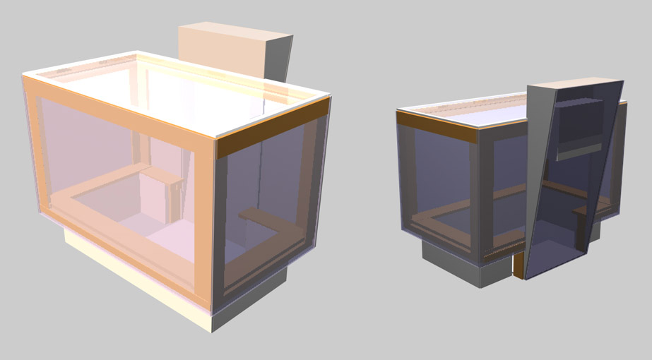

Building a Multitouch Table¶
Note:
The information on this page is from 2007, and a lot has happened since then. Our journal article contains newer information.
Building a multitouch table like the MTC we built at the c-base in 2006 is really not that much work. The basic setup is shown at the right. A projector, a camera and IR lighting are mounted behind a diffuser (aka projection surface). The camera picks up the infrared light reflected by objects behind the surface and a computer attached to the camera uses image processing to extract positional data from the images. In front of the projection surface, you can attach a transparent surface (we used shatterproof glass) to prevent damage to the projection surface itself.
Before you ask: No, this is not an FTIR device like the one Jeff Han (and, in his wake, countless others) built. What we do is similar in some respects (we use active IR camera tracking like he does), but we place the infrared lighting behind the projection surface. That saves lots of soldering. It also means the camera picks up things some distance away from the surface in addition to whatever is touching the surface. Additional image processing is used to separate touches from proximity sensing. As a result, an MTC can sense fingers touching the surface and hands in proximity to it, distinguish between the two, and even figure out which fingers belong to which hand.
That said, most of what follows is applicable to FTIR devices as well. In fact, everything but the part about the IR lighting is.
Materials¶
This is a list of the materials that we used to build the table, with some comments on experiences and alternatives. We spent around € 3500 for our table, but depending on your needs, you may end up with a lot less. Prices given are approximate and those that we payed at the time we built the original MTC (Fall 2006).
Disclaimer: None of us is affilated with any of the companies mentioned. We're just passing along our experiences.
Projector¶
We used a Panasonic PT-AX100U (€ 1300). It's bright (2000 Lumen), has a resolution of 1280x720 and enough lens shift to allow fairly good freedom in choosing its location inside the table. In our projector, however, the lens doesn't stay put by itself when it's mounted pointing downward. That may or may not be a problem depending on your projection geometry. If you opt for a different one, make sure you consider the lens shift it offers because that is what allows you to have a rectangular projection without degrading the image quality when the projector isn't directly behind the projection surface.
You'll also need a mirror to reflect the image so the projector can be placed inside the table. For good results, use a surface mirror. Foil mirrors like those by Alluvial result in good images as well and are a little cheaper - but strong vibrations (like those caused by loud music) cause them to vibrate. Ours was destroyed that way at a techno party. Regular mirrors give ugly double images when used in projection setups and should be avoided.
Camera¶
The camera in the original MTC is a Point Grey Firefly MV ($300 plus an incredible $100 shipping to Europe) with an extremely wide angle-lens (€ 24). The camera has a very high IR sensitivity and a framerate of 60 Hz at VGA resolution, and we're very happy with it. If you want to experiment with other cameras, libavg supports a variety of camera subsystems.
For IR filters, the lowest-cost alternative is to use an unexposed but developed film and cut that to the size you need. Works surprisingly well. An alternative is to buy a sheet of Photographic IR Filter, such as the Lee #87.
IR Lighting¶
The original MTC uses halogen lights with IR filters fitted in front, but we don't recommend repeating that. Other MTC-based tables have used high-powered LED floodlights. Currently, they're available from this German eBay shop for € 70 a piece. For a square meter-sized table, you'll need four of them. Since they are quite narrow focused - they're not built for usage witin a table - you need to increase their Angle with some concave lenses, preferrably one fresnel lens used on the back window of Vans.
Diffuser¶
The most cost-effective alternative is Gerriets Optitrans as projection surface (€ 80 for 1x2m). If you've got the money, a rear-projection screen like one from ThyssenKrupp gives a much clearer image. Both these screens have a gain of around 1.6. Screens with extremely uniform projection characteristics (gain close to or below one) like Gerriets Opera can cause camera tracking to fail.
Computer¶
Any modern (i.e dual-core) PC or Mac will do. The original MTC uses a 3.0 MHz Pentium D (Around € 500), but others have successfully used a Mac Mini as well. A single-core computer won't suffice, though, because the finger tracking algorithm runs best if it has a core to itself.
Fans¶
You'll need two 8 cm fans for the projector and at least two more for the body.
Construction¶
The image below shows the geometry of our MTC. The document Mtc_construction.pdf contains measurements and materials needed. The table is a wood and MDF (medium density fiberboard) construction that is incredibly robust, transportable, allows access from three sides and has a projection surface of 130x70 cm. Obviously, you can design your own geometry, but make sure all the components really fit into the table. In particular, today's home projectors have limited wide-angle capabilities, so even with a mirror (or two) it's hard to get the projector into the table. Most of the space inside the MTC is taken up by the light of the projector.
The projector is placed in the wedge that sticks out at the back of the construction, pointing downward. We have flexible ducts that transport the exhaust away from the projector and out of the enclosure because otherwise the hot air visibly distorts the projection. If you want the MTC to fit through normal-sized (In Germany they're usually at least 80 cm wide) doors, the wedge needs to be removable.
The mirror is flat on the floor of the MTC, and the camera is mounted directly on the floor as well. The IR lights should be in the four corners - make sure you have an even intensity of IR light on the entire surface.
The left ledge has room for a small computer. Install libavg and you're ready to build your own multitouch applications.
